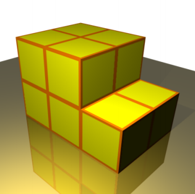

Project Euler 775
Project Euler 775
题目
Saving Paper
When wrapping several cubes in paper, it is more efficient to wrap them all together than to wrap each one individually. For example, with \(10\) cubes of unit edge length, it would take \(30\) units of paper to wrap them in the arrangement shown below, but \(60\) units to wrap them separately.

Define \(g(n)\) to be the maximum amount of paper that can be saved by wrapping \(n\) identical \(1\times 1\times 1\) cubes in a compact arrangement, compared with wrapping them individually. We insist that the wrapping paper is in contact with the cubes at all points, without leaving a void.
With \(10\) cubes, the arrangement illustrated above is optimal, so \(g(10)=60-30=30\). With \(18\) cubes, it can be shown that the optimal arrangement is as a \(3\times 3\times 2\), using \(42\) units of paper, whereas wrapping individually would use \(108\) units of paper; hence \(g(18) = 66\).
Define
\[G(N) = \sum_{n=1}^N g(n)\]
You are given that \(G(18) = 530\), and \(G(10^6) \equiv 951640919 \pmod {1\,000\,000\,007}\).
Find \(G(10^{16})\). Give your answer modulo \(1\,000\,000\,007\).
解决方案
定义\(f(n)\)表示用\(n\)个单位立方体拼出无空腔紧密体时的最小外表面积。那么显然\(g(n)=6n-f(n),\)所以\(\displaystyle G(N)=\sum_{n=1}^N (6n-f(n)) = 3N(N+1)-F(N),\)其中\(\displaystyle F(N)=\sum_{n=1}^N f(n)。\)因此核心变成：如何快速求 \(F(N)\)。
对于固定体积，外表面积最小的离散形状应尽量均衡，即三个边长尽量接近。从 \(k^3\) 过渡到 \((k+1)^3\) 的过程中，最优构造可以看成：先从 \(k\times k\times k\) 开始，往一个 \(k\times k\) 面上补一层（最多补 \(k^2\) 个），再往第二个面补一层（最多补 \(k(k+1)\) 个），最后往第三个面补一层（最多补 \((k+1)^2\) 个）。这样依次经过三个阶段，最终到达 \((k+1)^3\)。
这三个阶段对应的包围盒变化为：\(k\times k\times k\) 到 \(k\times k\times (k+1)\rightarrow k\times (k+1)\times (k+1)\rightarrow (k+1)\times (k+1)\times (k+1)\)。在每个阶段里，新增的一层是一个二维单位方格拼图，其对总表面积的贡献由该二维拼图的最小周长决定。于是 3D 问题递归地降到 2D。
那么我们考虑二维时的情况。定义 \(h(p)\) 为把 \(p\) 个单位正方形拼成连通紧密图形时的最小周长。二维最优形状同样应尽量接近正方形。设 \(k^2 \le p < (k+1)^2\)，则分两段：先从 \(k\times k\)（面积 \(k^2\)）开始，补到 \(k\times (k+1)\)（最多补 \(k\) 个），再补到 \((k+1)\times (k+1)\)（最多再补 \(k+1\) 个）。
于是有（重叠端点允许）：
\[ \begin{aligned} h(k^2)&=4k,&\\ h(k^2+p)&=4k+2, && 0\le p\le k\\ h(k^2+k+p)&=4k+4,&& 0\le p\le k+1 \end{aligned} \]
可见，从 \(k\times k\) 开始，先补一条边，周长先增加 \(2\)；补满成矩形后再补下一条边，周长再增加 \(2\)。
设 \(k^3 \le n < (k+1)^3\)。从 \(k\times k\times k\) 出发分三阶段增长。
第一阶段是\(k^3\) 到 \(k^3+k^2\)。在一个 \(k\times k\) 面上补 \(p\) 个立方体，\(0\le p\le k^2\)。基础立方体表面积是 \(6k^2\)，新增部分的贡献正是二维最小周长 \(h(p)\)，故
\[ \begin{aligned} f(k^3)&=6k^2,\\ f(k^3+p)&=6k^2+h(p), 0\le p\le k^2 \end{aligned} \]
第二阶段是 \(k^3+k^2\) 到 \(k^3+2k^2+k.\)此时第一面已补满，形状为 \(k\times k\times (k+1)\)，其表面积为\(2\bigl( k^2 + k(k+1) + k(k+1) \bigr) = 6k^2+4k.\)
再在第二个面上补 \(p\) 个立方体（该面的尺寸为 \(k\times (k+1)\)，最多 \(k(k+1)\) 个），同理可得
\[ f(k^3+k^2+p)=6k^2+4k+h(p), 0\le p\le k(k+1) \]
第三阶段是\(k^3+2k^2+k\) 到 \((k+1)^3.\)此时形状为 \(k\times (k+1)\times (k+1)\)，表面积为\(2\bigl( k(k+1) + k(k+1) + (k+1)^2 \bigr) = 6k^2+8k+2.\)再在第三个面（尺寸 \((k+1)\times (k+1)\)）上补 \(p\) 个立方体，\(0\le p\le (k+1)^2\)，得到
\[ f(k^3+2k^2+k+p)=6k^2+8k+2+h(p), 0\le p\le (k+1)^2 \]
接下来求解\(\displaystyle H(N)=\sum_{n=1}^N h(n).\)从每一层正方形环求和（或者是由\(h\)的闭式），按照\(h\)的分段形式，不难得到：
\[ \begin{aligned} H(k^2)&=\frac{1}{3}(8k^3+3k^2+k)\\ H(k^2+p)&=H(k^2)+p(4k+2),&&0\le p\le k\\ H(k^2+k+p)&=H(k^2+k)+p(4k+4).&&0\le p\le k+1 \end{aligned} \]
类似的思想，通过代入\(F\)的表达式，按照分段，可以得到：
\[ \begin{aligned} F(k^3)&=\frac{1}{30}(108k^5+15k^4+40k^3+15k^2+2k),\\ F(k^3+p)&=F(k^3)+6pk^2+H(p),&&0\le p\le k^2\\ F(k^3+k^2+p)&=F(k^3+k^2)+p(6k^2+4k)+H(p),&&0\le p\le k(k+1)\\ F(k^3+2k^2+k+p)&=F(k^3+2k^2+k)+p(6k^2+8k+2)+H(p).&&0\le p\le (k+1)^2\\ \end{aligned} \]
为此，只需要选择合适的表达式直接求解即可。
代码
1 | from tools import int_cubert, int_sqrt |